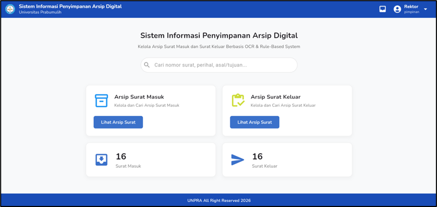
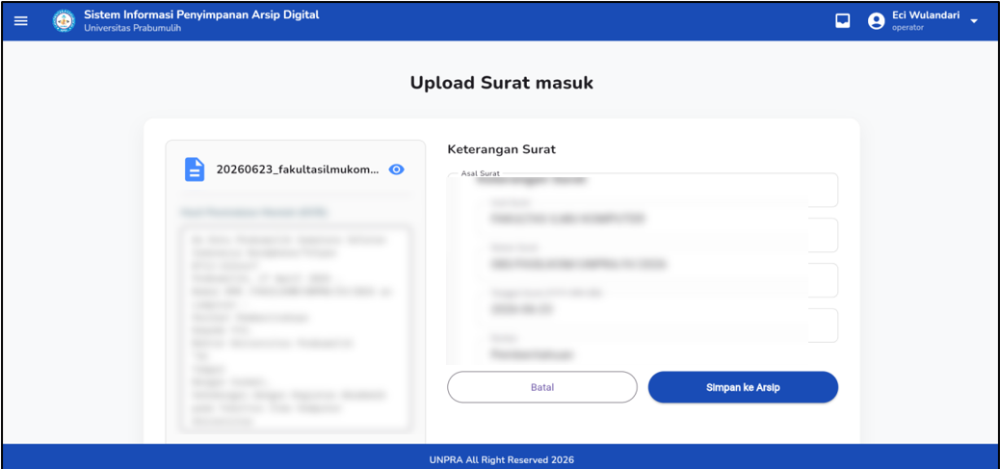
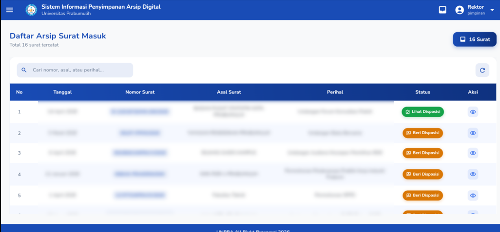
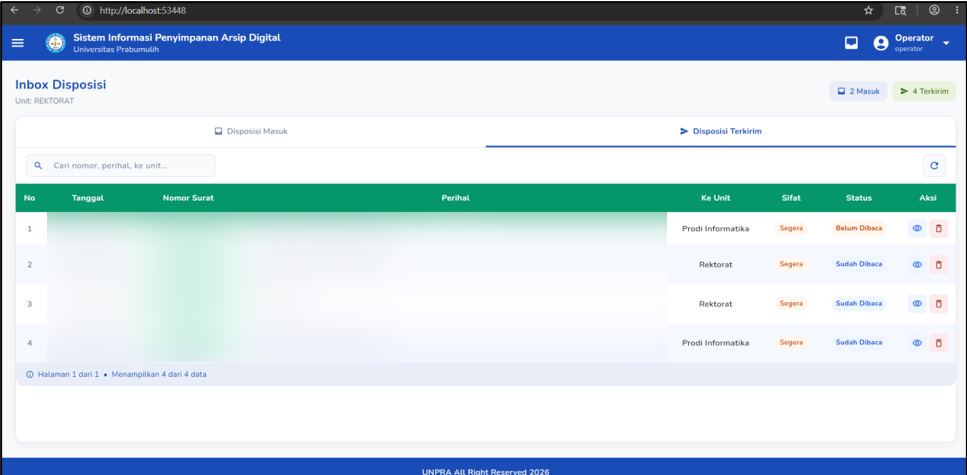

01
UNDERGRADUATE THESIS PROJECT
SIPARIS
Digital Archiving Application Based on OCR and Rule-Based System
A web-based digital archiving application developed to support incoming and outgoing correspondence management through digital document storage and information extraction.
My Contribution
Developed the application, including interface design, backend services, database integration, OCR, rule-based processing, authentication, and document management.
Key Features
Role-based access, digital archiving, OCR information extraction, document search, and disposition management.



